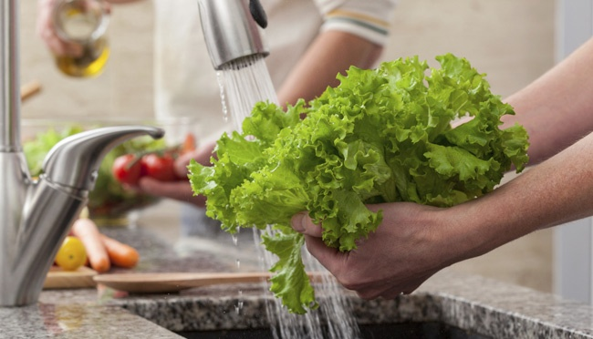
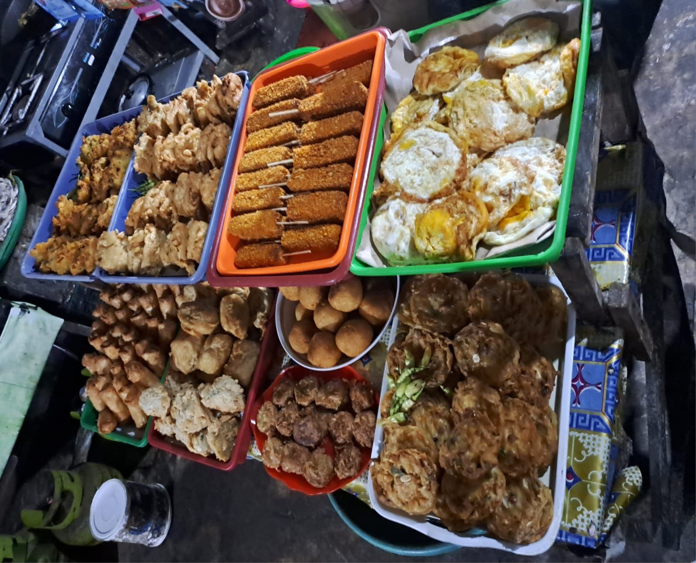

Proses Produksi
Tujuh tahap pembuatan nasi pecel, dari persiapan bahan sampai pengemasan.
Tujuh Tahap Pembuatan Nasi Pecel
-
Persiapan Bahan

Tahap 1: persiapan bahan. Menyiapkan semua bahan dan memeriksa kesegarannya.
-
Pembersihan Sayuran

Tahap 2: pembersihan sayuran. Sayuran dipilah lalu dicuci dengan air mengalir sampai bersih.
-
Perebusan Sayuran

Tahap 3: perebusan sayuran. Direbus sesuai jenisnya, lalu ditiriskan.
-
Pembuatan Sambal Pecel

Tahap 4: pembuatan sambal pecel. Kacang disangrai atau digoreng, dihaluskan bersama bumbu, lalu diencerkan dan dicicipi.
-
Pengolahan Lauk Pendamping

Tahap 5: pengolahan lauk pendamping. Lauk disiapkan sampai matang dan dipisahkan dari sayuran mentah.
-
Penyajian

Tahap 6: penyajian. Nasi, sayuran, dan sambal ditata di piring, lauk ditambahkan di sisi; disajikan selagi hangat.
-
Pengemasan

Tahap 7: pengemasan. Untuk dibawa pulang, nasi, sayuran, sambal, dan lauk dipisahkan agar tidak basah.
Kebersihan di Setiap Tahap
Pekerja mencuci tangan, memakai peralatan bersih, dan memisahkan talenan bahan mentah dari makanan matang.